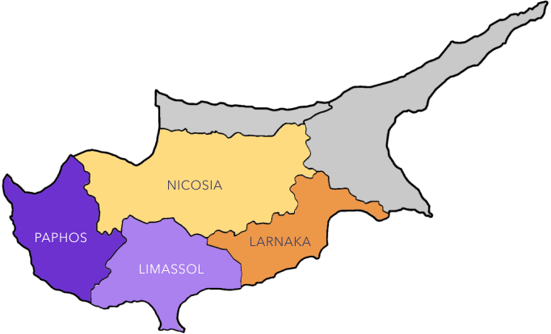

investments
business relocation
family relocation
Relocating to Cyprus
Seamless – Exceptional – Experience
The captivating Mediterranean island of Cyprus has become a business haven with a flourishing expat community. The strategic location that grants networking opportunities and the stability of being in the EU offers entrepreneurs the abilities they need to thrive.
Most popular cities
Nicosia
Nicosia
Nicosia
Nicosia
Our Services
Family Relocation
With strategic planning, we simplify the moving process so you and your family can feel safe and confident.
Family Relocation
With strategic planning, we simplify the moving process so you and your family can feel safe and confident.
Family Relocation
With strategic planning, we simplify the moving process so you and your family can feel safe and confident.
Moving to Paradise
Have you ever dreamed about the perfect place to live? Your definition of perfect may be different someone else’s. Are you longing to live by the beach and listen to the soothing waves or are you a kind of person who enjoys the bustling sounds of the city? Whatever lifestyle you desire, Cyprus has it all! Whether you’re travelling with your family, your partner, or as a solo business entrepreneur, this exotic island can offer you a little bit of everything.
If you’ve made the decision to relocate to Cyprus, then you are expecting to find a safe place to settle. With extremely low crime rate, stunning sandy beaches, and awe-inspiring mountain views, Cyprus is the place to be!
Why Choose Cyprus?
When you’re searching for the ideal home you want everything to be perfect. This is why over the years more and more people from all around the world are choosing Cyprus as their ultimate destination. This smal Mediterranean mesmerizes millions of visitors every year.
Progressive tax system
Offering one of the most attractive tax regimes in Europe
Stunning weather and climate
Enjoy a high quality of life with over 324 days of sun annually
Blooming expat community
Become part of an increasingly diverse community
Family-oriented values
Excellent education standards and extremely low crime rates
FIND THE iDEAL LOCATION TO CALL HOME
Click your mouse over any city to learn more about it
Limassol
The suny city of Limassol is the second largest city of the island , and it is among the most desirable travel and business destinations both for families and for entrepreneurs looking to expand their business horizons. The combination of elegant accommodation an ancient archetectural views is bound to capture the interest of people of any age.
The Limassol Marina is the first marina to harbor yechts in Cyprus and it is surrounded by renowed bards and restaurants. The residents of Limassol pride themselves on their culturual values and festivities as hundreds of theatrical performances take place each year at the Rialto theater , and the city holds an annual Wine Festival and Carnival Parade.
WHO WE ARE
PAM Consulting is built upon a team of motivated professionals aiming to provide families and businesses the services they need to relocate to the island of Cyprus.
We understand the challenges of deciding to relocate and this is why we prioritize our clients’ needs by making sure that the whole relocation process is as smooth and simple
as possible.
FOUNDER
Anastasia Papaharidemou
how we make it happen
We listen
Our most prominent purpose is to understand and identify with your needs so we can effectively find ways to provide solutions.
We strategize
According to your requirements, our team designs a thorough series of steps that will make the relocation process as smooth as possible.
We provide
We implement our services that are based on efficient strategic planning that respond to your family’s and business’s goals and ambitions.
We manage
Once you are settled, we make sure that everything is according to your expectations and your vision of the quality of our services.
Contact Us
+357 9056759
contact@pamrelocation.com
send inquiry
Our Partners
Frequently Asked Questions
Question: How is the business environment in Cyprus?
Answer: Cyprus is considered to be one of the most business-oriented countries of the EU, offering business entrepreneurs a variety of opportunities to expand their corporate dreams and ambitions.
Question: How is the business environment in Cyprus?
Answer: Cyprus is considered to be one of the most business-oriented countries of the EU, offering business entrepreneurs a variety of opportunities to expand their corporate dreams and ambitions.
Question: How is the business environment in Cyprus?
Answer: Cyprus is considered to be one of the most business-oriented countries of the EU, offering business entrepreneurs a variety of opportunities to expand their corporate dreams and ambitions.
Question: How is the business environment in Cyprus?
Answer: Cyprus is considered to be one of the most business-oriented countries of the EU, offering business entrepreneurs a variety of opportunities to expand their corporate dreams and ambitions.
Question: How is the business environment in Cyprus?
Answer: Cyprus is considered to be one of the most business-oriented countries of the EU, offering business entrepreneurs a variety of opportunities to expand their corporate dreams and ambitions.